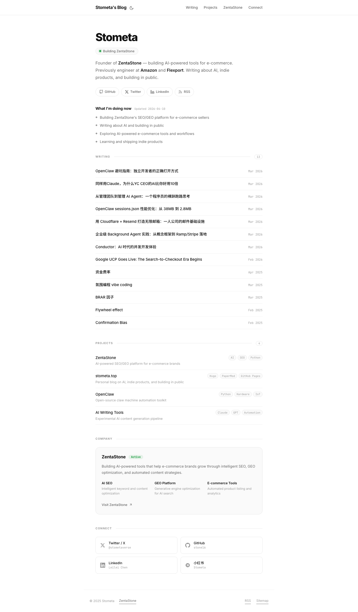

Platform Design · Grilling Session Output
Rebuilding a Hugo blog as a bilingual publication, a reader conversation, and a private artifact host — on TanStack Start, Cloudflare Workers and D1. Twelve decisions, all resolved.
You opened with “not look good, and not yet with great UI and post, knowledge.” Having read the repo, the live site and the git history: it doesn't look bad — it looks generic and unmaintained, and its posts are published by a machine with no review gate. Those are the two real problems. The platform rewrite is downstream of them.

| Defect | Evidence in the repo |
|---|---|
| The index is not an invitation | 13 bare title + date rows. No excerpt, reading time, category or cover. A reader has no reason to choose any particular post. |
| Your best work is invisible | x-algorithm-for-you-feed-deep-dive.md is 1,319 lines. Confirmation Bias.md is 18. They render identically. |
| No publish gate | 12 of the last 16 post commits are tagged [nexus:<uuid>] — published autonomously, straight to live. The log contains chore: remove duplicate post (publish race condition) and a same-day Revert. |
| Comments exist but nobody can use them | Giscus is fully wired at layouts/partials/comments.html:15. GitHub GraphQL reports discussions.totalCount: 0. It demands a GitHub account and an OAuth grant before a reader can type one character. |
| Language mix reads as neglect | 10 zh + 4 en interleaved in one flat /posts/. hugo.yaml:3 declares languageCode: en-us. There is no i18n config at all. |
| The design doc describes a site that doesn't exist | DESIGN.md specs a #08080f dark purple→cyan gradient system. hugo.yaml:24 ships defaultTheme: light. The live site is white and flat. |
| Stale surface | Footer reads © 2025. “Projects” lists stometa.top as a project — which this migration deletes. |
The reframe
Three of the four things you proposed are infrastructure. But the credibility problem is editorial hierarchy plus a review gate. The rewrite is still worth doing — it is what makes the admin, the artifacts and first-party comments possible — but it is not, by itself, the fix.
Each was chosen against a named constraint that ruled out the alternatives. Nine are recorded as ADRs in docs/adr/, currently status: proposed — they flip to accepted on your confirmation.
No git mirror. Keeping git authoritative would mean rewriting the posts module, editor and taxonomy of the very template adopted to avoid that work. Time Travel gives 30-day restore.
ADR-0001Leaving git forfeits diff review of what was published. Every write appends a revision row; the editor shows a diff and restores in one click.
ADR-0001 · consequenceFull parity was rejected: it makes every post a permanent 2× writing commitment, and thin machine translation is a negative quality signal on an authority play.
ADR-0002<slug>.stometa.devBrand coherence chosen over the stronger isolation a second registrable domain would give. Defensible only with the four browser-enforced controls in section 04.
ADR-0003Anonymous + Turnstile; first comment held, then the commenter is trusted. Turnstile over reCAPTCHA because it is reachable from mainland China. Nothing to migrate.
ADR-0004A memorable Slug is a guessable Slug, so the name can't be the lock. visibility changes freely without breaking a sent link. Defaults to password + noindex.
~60% of the template is SaaS machinery a blog never runs. The first schema change touches posts — the table upstream owns — so every future merge conflicts for no benefit.
The requirement was “in my own words.” The autonomous publisher is the mechanism that produced the quality being fixed. Silence, not bad writing, is this decision's failure mode.
ADR-0007Both editors offered per post. Toggling to rich mode runs the round-trip and blocks unless the result is byte-identical, showing the diff it would have caused.
ADR-0008/enInverts the template default. Old paths survive byte-for-byte, so migration is one bulk 301 plus four hand rules — and the majority language gets the shortest URL.
ADR-0009 · consequence“Authority” is what editorial design encodes. The DESIGN.md palette is retired — ShipAny's own design skill v2 commit literally reads “ban dark-gradient-glow cliches.”
Both costs of big-bang are structurally removed: Hugo keeps publishing throughout, and the finished app runs on a private staging host from week one.
ADR-0009Four Codex workers were dispatched under Orca orchestration to attack the claims above rather than confirm them. They found five errors, two of which damage decisions you already made. Every verdict below was re-checked against primary sources or the source tree before being written here.
| Verdict | What I told you | What is actually true |
|---|---|---|
| Wrong | “~60% of ShipAny is SaaS machinery a blog never runs.” | The six modules are 1,735 of 64,940 lines in src — 2.67%; 8.47% including their 26 feature routes. I re-ran the counts: 626+297+101+221+337+153 = 1,735. The strip is still right, but for attack surface, not code volume. |
| Wrong | “Those modules are cleanly removable.” | Real coupling: api/user/info.ts:18-28 gates on getUserPlan; sign-up.tsx:126-151 has an invite branch; admin/users.tsx embeds credit-grant UI; init-rbac.ts:126-158 seeds their permissions; all four schema variants define the tables. |
| Wrong | “Turnstile, chosen because it is reachable from mainland China.” | Cloudflare documents the opposite: “Turnstile is not supported in Mainland China.” I fetched the page myself to confirm. Turnstile was picked solely on that premise, so ADR-0004 is void and reopened — see Q6. |
| Wrong | “D1 Time Travel gives 30-day restore.” | 7 days on Workers Free; 30 days only on Paid. The export command I quoted was also not executable — it needs the database name and --output. |
| Wrong | “The round-trip degrades fenced code blocks.” | Tested against the real markdown-it/turndown configs: fenced code with a language hint survives unchanged. Tables are destroyed — turndown emits plain paragraphs, on the first save, not gradually. |
| New | — | Workers Free caps CPU at 10 ms/request, and Cloudflare places auth/SSR work at 10–20 ms. This design should budget Workers Paid, $5/mo. That also restores 30-day Time Travel, repairing the row above. |
| New | — | A *.stometa.dev/* route does not match the apex — “if a route pattern hostname begins with *., it only matches all subhosts.” A separate stometa.dev/* route is required. |
| New | — | Your flagship post is not markdown. x-algorithm-for-you-feed-deep-dive.md opens a raw <style> block at line 21, holds 299 HTML tags, imports Google Fonts in-body, and carries its own palette (--primary:#ff385c). It renders only because goldmark.renderer.unsafe: true. |
| Holds | Slugs preserve byte-for-byte; markdown is already the storage format; Chinese-at-root is cheap; the __Host- + Origin threat model. | Confirmed. Locale inversion is two edits: project.inlang/settings.json:3 and the urlPatterns block at vite.config.ts:70-99. No duplicate slugs; all 14 posts build. |
What this costs you
Migration is not a pure lift-and-shift. Six posts have no slug, five have no description, one has neither category nor tags, tags has no column in the proposed schema at all, and the flagship needs either a sanitised HTML renderer or a markdown rewrite. Full detail in docs/designs/stometa-dev/post-migration-map.md.
One Worker application, two request personalities: the apex serves the publication and the authenticated admin; the wildcard serves untrusted artifact HTML and shares nothing but the database.
flowchart TD A["Reader"] --> B["stometa.dev
zh at root · /en prefixed"] Z["Recipient of a shared link"] --> C["<slug>.stometa.dev
artifact origin"] Y["Stometa"] --> D["stometa.dev/admin
__Host- session cookie"] B --> W["TanStack Start on Workers"] C --> W D --> W W --> E[("D1
posts · revisions · comments · artifacts")] W --> F[("R2
artifact bytes")] W --> G["Turnstile
bot check"] H["stometa.top
Hugo · GitHub Pages"] -. "301 at cutover" .-> B classDef trust fill:#e2efe6,stroke:#2f6b45,color:#17150f classDef untrust fill:#f7e2dd,stroke:#98301f,color:#17150f classDef legacy fill:#f7ecd6,stroke:#8a5a11,color:#17150f class B,D trust class C untrust class H legacy
erDiagram
POST ||--o{ REVISION : "appends on every write"
POST ||--o{ COMMENT : "receives"
POST }o--o| TRANSLATION_GROUP : "optionally pairs with"
POST }o--|| CATEGORY : "filed under"
COMMENTER ||--o{ COMMENT : "writes"
ARTIFACT ||--|| VISIBILITY_RULE : "governed by"
POST {
text slug PK
text locale "zh or en"
text title
text body_markdown
text status "draft or published"
text editor_mode "markdown or rich"
int translation_group_id "nullable"
}
REVISION {
int id PK
text body_markdown
text created_at
}
COMMENT {
int id PK
text status "pending approved spam"
text body
}
COMMENTER {
text display_name
bool trusted "true after first approval"
}
ARTIFACT {
text slug PK "subdomain label"
text kind "html or pdf"
text r2_key
text update_key "secret"
}
VISIBILITY_RULE {
text visibility "public password invited"
bool noindex
}
sequenceDiagram actor S as Stometa participant AD as Admin participant D as D1 actor R as Reader participant T as Turnstile S->>AD: write in markdown editor AD->>D: save → append REVISION Note over AD,D: toggling to rich mode first
round-trips and BLOCKS if lossy S->>AD: publish AD->>D: status = published R->>D: read post R->>T: submit comment T-->>R: challenge passes R->>D: COMMENT status = pending D-->>AD: moderation queue S->>AD: approve + reply AD->>D: commenter.trusted = true Note over R,D: their next comment publishes immediately
You chose one brand domain over two registrable domains. That is a real trade, and it holds only because these are enforced by the browser rather than by remembering to be careful. Drop any one and the decision stops being defensible.
| Control | Why it cannot be quietly misconfigured |
|---|---|
__Host- session cookie prefix | Browsers reject a __Host- cookie that carries a Domain attribute. Host-only scoping becomes structurally impossible to get wrong, rather than a config line someone edits later. |
Origin allowlist on mutating routes | The Origin header is set by the browser and cannot be forged from script. One middleware rejecting anything ≠ https://stometa.dev closes the cross-subdomain request path outright. |
connect-src 'self' CSP on artifacts | Lavish artifacts are self-contained by design, so this costs them nothing while blocking calls back to the apex API. |
| Reserved slug list | www · api · admin · mail · staging · _dmarc and friends must never be claimable, or an artifact can impersonate infrastructure. |
Residual risk, stated plainly
Subdomains of stometa.dev are a different origin but the same site. Origin isolation stops DOM and localStorage access; it does not stop SameSite=Lax cookies riding along. The controls above are what close that gap. If you ever open artifact publishing to other people, revisit ADR-0003 before you do — not after.
A good candidate — stripped. Your checkout at ~/dev/shipany-tanstack is 0 commits ahead and 0 behind upstream: a pristine template, not a customised project. It describes itself as “a headless SaaS engine”, and that is exactly the problem and the opportunity.
| Verdict | Module | Reason |
|---|---|---|
| Keep | core/i18n + paraglide zh/en | Locale routing already built. Only the default locale flips (D10). |
| Keep | modules/posts · modules/taxonomy | Storage format is already markdown — rich-text-editor.tsx:2. The 14 existing posts migrate as-is. |
| Keep | routes/admin/* | Grouped sidebar, status tabs, category selector. The shell you'd otherwise rebuild. |
| Keep | core/auth (better-auth) · modules/rbac | Hand-rolled auth is the one thing worth never doing. |
| Keep | modules/apikeys | Becomes the CLI upload credential for artifacts. |
| Keep | core/storage/r2.ts · core/db/d1.ts | Artifact bytes and the database binding. Cloudflare path is pre-wired in wrangler.example.jsonc. |
| Delete | modules/payment | Stripe, PayPal, Alipay, WeChat Pay — four providers, live webhook endpoints, zero use. |
| Delete | modules/credits · modules/subscriptions | FIFO ledger, expiry, auto-grant, subscription state. Pure liability on a blog. |
| Delete | modules/invite-codes · modules/tickets · modules/ai-tasks | Each ships live API routes and tables. Attack surface with no upside. |
| Build | modules/comments · modules/artifacts · post revisions | The three things the template does not have. |
Everything above is plumbing. This section is the one that changes whether a stranger takes you seriously — and none of it requires the rewrite to land first.
| Move | What it does |
|---|---|
| Promote one flagship | The X-algorithm deep dive is 1,319 lines of original analysis. It gets a featured slot with an excerpt, not row nine of a list. A visitor's first impression becomes your best work instead of your most recent. |
| Group by theme, not by date | 工程实践 · 量化 · AI 工具 · 随笔. Four small curated shelves read as a body of work; fourteen reverse-chronological rows read as a dormant feed. |
| Excerpt + reading time on every row | The single highest-leverage change. Right now nothing distinguishes a 42-minute analysis from an 18-line note. |
| CJK-first type stack | Line-height ~1.75, deliberate PingFang SC / Noto Sans CJK SC fallbacks, no letter-spacing on 汉字. Most beautiful Western templates render Chinese badly; a zh-majority site must choose this rather than inherit it. |
| One accent colour, no gradients | A restrained cinnabar against warm paper — this page is rendered in the proposed system, so you are reading the proposal, not a description of it. |
Retire DESIGN.md V3 | The purple→cyan-on-near-black palette is the stock AI-product look. On a credibility play it works against you. |
You chose a single cutover. The Hugo site serves stometa.top untouched through every phase below, and the new app is deployed to a password-protected noindex staging host from phase 1 onward — so the cutover is a DNS change against a system that has been running for weeks, not a launch.
stometa.dev, nameservers to Cloudflare, wildcard *.stometa.dev proxiedstone16/stometa-dev; first commit deletes payment, credits, subscriptions, invite-codes, tickets, ai-tasks; drop the upstream remotewrangler.jsonc from the example, pnpm cf:deploy proven end to endstaging.stometa.dev live, password-gated, noindexlocale, translation_group_id, revisions, editor_mode/en prefixed; slugs preserved byte-for-bytecontent/posts/*.md with front-matter mapped to columnshreflang on Translation Group pairsvisibility rule, update key, reserved-slug list__Host- cookie, Origin allowlist, artifact CSP, reserved slugslavish-axi publishing target pointed at stometa.dev instead of ht-ml.appstometa.dev apex to the Workerstometa.top/* → stometa.dev/*, plus 4 hand rules for the English posts/index.xml with the feed's self-<link> updated — miss this and every RSS subscriber goes quiet without telling youstometa.top; submit the new sitemap to Search Consolestone16/HugoBlog read-only| Severity | Risk | Mitigation, or the honest absence of one |
|---|---|---|
| High | Silence. Nexus retired + a full rebuild = months of building and nothing published. | The historical record is real: hand-written posts ran Mar–Apr 2025, then nothing until August, then nothing until Nexus started in Feb 2026. Hugo staying live is a capability, not a mitigation — it only helps if you use it. This one is on you, not the architecture. |
| Med | Same-site subdomain lets artifact JS reach the admin API | Fully closed by the four controls in section 04 — but only if all four ship. Treat them as one indivisible task. |
| Med | Round-trip corruption via an accidental rich-mode toggle | Blocked mechanically, not by discipline: the toggle refuses unless md → html → md′ is byte-identical. Revisions cover the residue. |
| Med | SEO and subscriber loss at cutover | Slugs preserved byte-for-byte, so one bulk rule carries the link equity. The genuinely easy-to-forget items are the feed 301 and the GA4 stream. |
| Low | D1 loss takes years of writing with it | Time Travel gives 30-day point-in-time restore and wrangler d1 export --remote dumps on demand. Worth wiring the export into CI anyway — it is one line. |
| Low | Moderation queue becomes a chore you stop working | Trust-on-first-approval means the queue shrinks as your real readership stabilises. If it still nags, that is a signal to revisit ADR-0004, not to leave comments pending forever. |
These are genuinely unresolved — Q6 and Q7 are new, forced by the verification results above. Pick or type, then queue each answer; they come back to me as separate prompts so nothing gets lost.
Nothing else has been touched — no code, no config, no content.
| File | Contents |
|---|---|
CONTEXT.md | Glossary: Post, Locale, Translation Group, Revision, Nexus, Comment, Commenter, Trusted Commenter, Moderation Queue, Artifact, Slug, Update Key, Admin — each with the wording to avoid. |
docs/adr/0001-…-source-of-truth-for-posts.md | D1 sole source of truth; Revisions become mandatory as a consequence. |
docs/adr/0002-one-locale-per-post….md | One Locale per Post; full parity rejected and why. |
docs/adr/0003-artifacts-on-a-wildcard-subdomain….md | Brand domain over separate registrable domain; the four controls that make it hold. |
docs/adr/0004-first-party-comments-replace-giscus.md | Giscus's zero-thread evidence; Turnstile over reCAPTCHA for mainland reachability. |
docs/adr/0005-artifact-address-is-decoupled….md | Slug ≠ lock; the Universal SSL single-wildcard-level constraint. |
docs/adr/0006-…-hard-fork-of-shipany….md | No upstream; why the security-patch counter-argument doesn't apply. |
docs/adr/0007-posts-are-written-by-hand.md | Nexus retired; silence named explicitly as the failure mode this creates. |
docs/adr/0008-markdown-is-the-storage-format….md | Rich mode refused rather than discouraged, via a round-trip equality check. |
docs/adr/0009-single-cutover-behind-…-staging-host.md | Big-bang with both costs structurally removed; the cutover checklist. |
Next
All nine ADRs are status: proposed. Answer the five questions above, annotate anything here you disagree with, and on your confirmation they flip to accepted and Phase 0 starts.